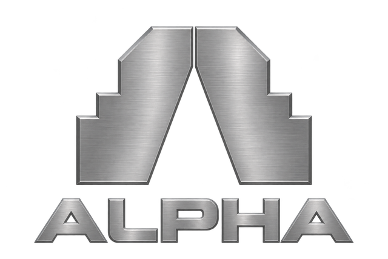
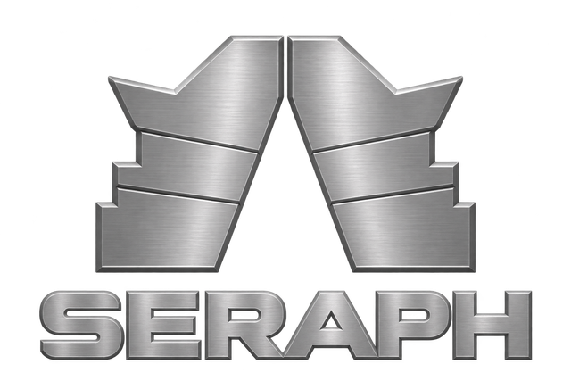

UPPER CITY / 상층
코로나
인증과 검문을 통과해야 닿을 수 있는 상층. 기업의 권력이 도시의 가장 높은 곳에 자리한다. 바벨탑 형태의 알파 본사는 엑슬렉의 지평선을 지배한다.
출입 인증 · 기업 구역 · ALPHA 본사

WELCOME TO EXLEX / WORLD ARCHIVE 01
인공 하늘 아래, 수직으로 쌓아 올린 도시.
몸은 바꿀 수 있어도, 계약은 바꿀 수 없다.
01 / THE VERTICAL CITY
계절이 없는 인공기후 돔 아래.
중앙의 통유리 엘리베이터가 연결하는 것은
서로 다른 높이의 삶이다.
UPPER CITY / 상층
인증과 검문을 통과해야 닿을 수 있는 상층. 기업의 권력이 도시의 가장 높은 곳에 자리한다. 바벨탑 형태의 알파 본사는 엑슬렉의 지평선을 지배한다.
02 / POWERS OF EXLEX
거대기업은 경쟁하고 협력한다.
그 아래, 아웃로들은 자신들의 질서를 세운다.

방위산업과 전투 사이버웨어를 중심으로 도시의 힘을 만드는 거대기업.

보안 · 경비 · 추적
보험과 의료를 축으로 삶의 기반을 쥐고 있는 복합기업. 알파와 경쟁하며 때로 협력한다.
의료 · 현장 응급지원
THE TWELVE / 아웃로 연합
아비수스의 열두 크루가 이루는 연합.
크루의 대장은 카르디, 구성원은 아포스트.
그 중심에는 페트로, 니벨이 있다.
03 / PEOPLE OF EXLEX
누군가는 동료가, 누군가는 상대가 된다.
이름을 선택해 그들의 기록을 펼쳐보자.
20 RECORDS
일치하는 인물이 없어. 다른 이름이나 직군으로 검색해줘.
04 / THE CODE
성역은 아비수스 최심부의 바, 바티칸.
십계명은 권력보다 위에 있다.
최고대표 페트로에게도 예외는 없다.
신분, 지위, 소속과 무관하게 계약은 반드시 지켜야 한다. 최고대표 페트로에게도 예외는 없다.
계약을 맺기 전에는 자유롭게 수락하거나 거절할 수 있으며, 강제는 금지된다. 합의로 계약이 성립하면 약속한 대가를 반드시 이행해야 한다.
신원, 의뢰 내용과 거래 기록을 허가 없이 공개해서는 안 된다.
정당한 의결 없이 다른 크루의 지휘권을 빼앗아서는 안 된다.
바티칸 안에서는 살상, 습격과 무력 충돌이 금지된다.
콘클라베의 좌석을 사칭하거나 무단으로 차지해서는 안 된다.
계약, 현상금, 거래와 신원 기록을 위조·변조하거나 삭제해서는 안 된다.
정당한 절차를 거친 콘클라베의 결정은 모든 크루에 구속력을 갖는다.
계약 위반이 확정된 자는 현상금 목록 1위에 등록된다. 누구도 면책되지 않는다.
십계명의 적용에서 제외되는 자는 없다. 규율은 콘클라베의 정식 의결을 통해서만 바꿀 수 있다.
05 / FIELD GUIDE
서로 다른 역할이 하나의 크루를 완성한다.
경로를 개척하고 빠르게 이동한다.
먼 거리에서 전투를 지원한다.
장갑과 힘으로 진입로를 연다.
시스템과 정보의 전선을 다룬다.
총과 크롬만으로는 살 수 없다.
정비와 의료, 거래를 이어갈 돈도 필요하다.

YOUR STORY / STARTING POINT
주다스 크루를 찾아온 당신.
어떤 사람인지, 무엇을 할 수 있는지.
첫마디는 당신의 몫이다.
“주다스 크루에 들어가고 싶어.”